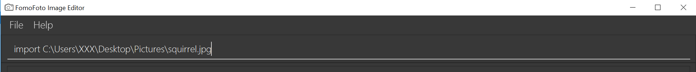
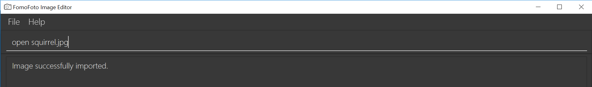
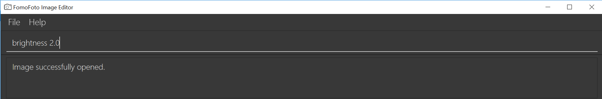
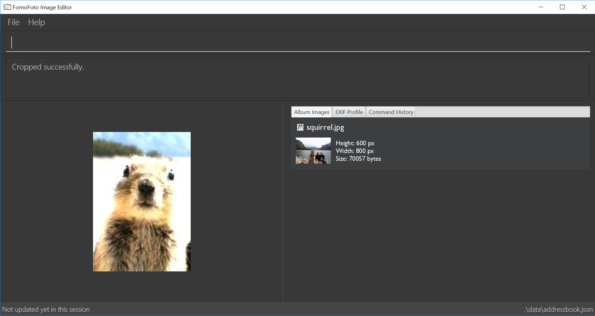

Overview
My team and I were tasked with enhancing a basic command line addressbook for our Software Engineering project. We decided to morph the project into a image editor.
FomoFoto is a robust yet simple image-editing tool. Users interact with the application through worded commands from their keyboard, and receive visual feedback from it through the displayed image on the application.
Unlike other heavy image editors, FomoFoto has a very gentle learning curve as it abstracts out clutter by providing the more essential features (complex editing can still be done with special commands). The features and implementations are well documented in guides for users and developers respectively.
In addition, FomoFoto is well-maintained with high reliability and code quality as it is covered by rigorous tests and checks.
Summary of contributions
This section provides a summary of my coding, documentation and other contributions to FomoFoto, our team project.
Major Enhancement — Ability to open files
-
What it does: It allows users to open an image that was previously imported into the album for editing.
-
Justification: This feature is essential as it sets up the application to allow image manipulation and image filters commands to work. Upon using the
opencommand, the image is displayed prominently in the main window of the application, allowing users to confirm and know which image they are currently editing. -
Highlights: This enhancement requires in depth analysis on how the temporary image is stored. It retrieves the opened image from
assetsfolder and creates two copies of it intempfolder namedori_img.pngandtemp_img.png. Subsequent edits will update and replace thetemp_img.png. Theori_img.pngis utilised during anundoorredo. The implementation was challenging as it required many changes to theModelto ensure components access only folders that they are related to. -
Code contributed: [List of commits]
Other Contributions
-
Project management:
-
Managed release
v1.2andv1.3(2 releases) on GitHub
-
-
Documentation:
-
Community:
Contributions to the User Guide
Given below are sections I contributed to the User Guide. They showcase my ability to write documentation targeting end-users. |
A Walk Through
Let’s start on our image editing journey. In this walk through, we will be demonstrating some simple commands to edit a sample image.
-
Head over to this
linkto get a suggested sample image to start from. -
Save the image in any desired folder you like on your device, like your Pictures folder for example. Name your image squirrel.jpg.
-
Start FomoFoto by referring to [Quick Start].
-
Open the folder that the image file is stored in. Then, to get the file path of the image:
-
In Windows: Hold on to the Shift key and right click on your image file. Click the option Copy path.
-
In Mac: Go to terminal and navigate to your image file. Type 'pwd' to get the filepath to your image file and copy paste.
-
-
Go back to the FomoFoto application. Import the image into FomoFoto by typing as follows:
 Figure 1. Import Command
Figure 1. Import Command -
Paste the file path by simultaneously pressing Ctrl and V keys.
-
In Windows: Remove the " and " signs at the two ends of the filepath.
-
-
Ensure your final command looks similar to the figure below (filepath may differ):
Figure 2. Import with Filepath -
Press Enter to execute the import command. Your image should be now displayed on the Album tab on the FomoFoto application as shown in the figure below.
 Figure 3. Import Success
Figure 3. Import Success -
Open the imported image in FomoFoto by typing as follows:
Figure 4. Open Command -
Press Enter to execute the open command. Your image should be now displayed on the FomoFoto application as shown in the figure below.
 Figure 5. Open Success
Figure 5. Open Success -
Increase the brightness of the image by typing the following command:
brightness 2.0. This doubles the brightness of the image.Figure 6. Brightness Command -
Press Enter. Your image should be brighter as shown in the figure below.
 Figure 7. Brightness Success
Figure 7. Brightness Success -
Crop your photo by typing the following command:
crop 310 250 140 200 squirrel.jpg. Press Enter. Your image should look similar as the figure below.Figure 8. Crop Success
{kind=link}
List Files: listfiles
Lists all files in assets folder.
Format: listfiles
Open an image : open
Opens an image inside assets folder for editing.
Format: open FILENAME
Example:
-
open sample.jpg
Save image : save
Applies and saves your edits.
Format: save or save FILENAME
Example:
-
save MyNewImage.png
Contributions to the Developer Guide
Given below are sections I contributed to the Developer Guide. They showcase my ability to write technical documentation and the technical depth of my contributions to the project. |
Model component

API : CurrentEdit.java, Album.java
The Model component consists of Album class and CurrentEdit class.
Album Class:
-
stores imported images as a list of images.
-
contains methods to access
assetsfolder.
CurrentEdit Class:
-
stores an
Imageinstance intempImageandoriginalImagewhen an image is opened. -
creates a copy of the opened image and the current edited image in
tempfolder. -
tempImageis updated each time a command to edit the image is called. (e.g.RotateCommand,ContrastCommand) -
stores a list of commands that the user input after an image is opened.
-
contains methods to access
tempfolder.
Open Feature
The open command allows users to open a previously imported image for image-editing.
Current Implementation
The open function is facilitated by Album and CurrentEdit. It uses the following operations:
-
Album#checkFileExist(String)- Checks if file name specified by theStringexists in assets folder. -
Album#retrieveImage(String)- Return anImagespecified by theStringin assets folder. -
CurrentEdit#openImage(Image)- Creates two copies of the opened image intempfolder. The duplicated images are instantiated astempImageandoriginalImage. -
CurrentEdit#updateExIF(Image)- Updates the Exif data of the image. -
CurrenEdit#displayTempImage()- Displays the temporary image stored in directory: "src/main/resources/temp/".
Given below is an example usage scenario and how the open mechanism behaves at each step.
Step 1. The user executes open sample.png.
Step 2. Album#checkFileExist(String) is called to check if the file specified by the String exist in assets folder. If it exists, Album#retrieveImage(String) is called to create an Image object from the specified file. Otherwise, CommandException is thrown.
Step 3. The Image is passed to CurrentEdit#openImage(Image) to create two copies of Image, named temp_img.png and ori_img.png, in temp folder. These copies are then instantiated as tempImage and originalImage.
Step 4. CurrentEdit#updateExIF(Image) is called to updates the information of the opened image in the GUI.
Step 5. CurrenEdit#displayTempImage() displays the opened image on the GUI.
The following sequence diagram shows how the open command works:
Design Considerations
-
Alternative 1 (current choice): Users can only open and edit one image at a time.
-
Pros: Easy to implement.
tempfolder only stores one original image and one temporary image. Clear to users that edits are done to the only opened image. -
Cons: Users are unable to open other images while editing.
-
-
Alternative 2 : Users can open and edit multiple images.
-
Pros: Users are able to edit multiple images simultaneously.
-
Cons: Open has to distinguish whether user is opening an image from
assetsfolder ortempfolder. Requires many duplicates with different names. This may be confusing for the user.
-
List Files Feature
The listfiles command displays a list of all the files in assets folder.
Current Implementation
The listfiles function is facilitated by Album. It uses the following operations:
-
Album#getFileNames()- Returns a list of all the files inassetsfolder.
Given below is an example usage scenario and how the listfiles mechanism behaves at each step.
Step 1. The user executes listfiles.
Step 2. Album#getFileNames() accesses assets folder and returns all the file names in a String array.
Step 3. The String array is displayed on the GUI.
The following sequence diagram shows how the listfiles command works:
Design Considerations
listfiles command was created to allow users to know what files are stored in assets folder so that they can call open using the right file names.
Save Feature
The save command applies the edits to the current edit image and saves it into assets folder.
Current Implementation
The save function is facilitated by Album and CurrentEdit. It uses the following operations:
-
CurrentEdit#tempImageExist()- Returns truetempImageinCurrentEditis null.tempImageis null only ifopencommand was never called. -
CurrentEdit#getTempImage()- Returns the latest edited image stored intempImageinCurrentEdit. -
CurrentEdit#getOriginalName()- Returns original name of opened image. -
CurrentEdit#overwriteOriginal(String)- Replacesori_img.pngwithtemp_img.png' in `tempfolder. UpdatesoriginalImagetotempImageandoriginalImageNametoStringinCurrentEdit. -
Album#checkFileExist(String)- Checks if file name specified by theStringexists in assets folder. -
Album#saveToAssets(Image, String)- Saves theImageasStringintoassetsfolder. -
Album#populateAlbum()- Updates list of images inAlbumclass. -
Album#refreshAlbum()- Updates and displays the latest images inassetsfolder on the GUI.
Given below is an example usage scenario and how the save mechanism behaves at each step.
Step 1. The user executes save.
Step 2. CurrentEdit#tempImageExist() checks if an image was previously opened. If no open was called previously, CommandException is thrown.
Step 3. CurrentEdit#getTempImage() retrieves the tempImage from CurrentEdit.
Step 4. If user did not input a String after save previously, CurrentEdit#getOriginalName() will retrieve the originalImageName from CurrentEdit. Otherwise, Album#checkFileExist(String) will be called to check if a file name is similar to String. If it is a duplicate, CommandException will be thrown.
Step 5. Album#saveToAssets(Image, String) takes in the previously retrieved Image and String to create a new image file in assets folder.
Step 6. CurrentEdit#overwriteOriginal(String) is called to update the files in temp folder and their respective instances in CurrentEdit.
Step 7. Album#populateAlbum() updates the list of image in Album class to ensure it reflects all the files in assets folder.
Step 8.Album#refreshAlbum() is called to update the Information Panel on the GUI.
The following sequence diagram shows how the save command works:
Design Considerations
-
Alternative 1: User must input a string to name the the new image.
-
Pros: Name of the new image is clear to the user.
-
Cons: Tedious for user to type in a name each time
saveis performed.
-
-
Alternative 2 (current choice) : User can choose to input a string to name the new image or overwrite the opened image.
-
Pros: Convenient for user to
savequickly without having to type a new name everytime. -
Cons: User may unintentionally overwrite the opened image.
-
Appendix A: User Stories
Priorities: High (must have) - * * *, Medium (nice to have) - * *, Low (unlikely to have) - *
| Priority | As a … | I want to … | So that I can… |
|---|---|---|---|
|
new user |
see usage instructions |
refer to instructions when I forget how to use the application |
|
user |
adjust the brightness of my photo |
make it brighter or darker |
|
user |
adjust the contrast of my photo |
|
|
user |
resize my photo |
|
|
user |
crop my photo |
trim it into my desired dimensions |
|
user |
rotate my photo |
change its orientation |
|
user |
undo and redo my edits |
revert or recover my changes |
|
user |
be able to save my image |
continue editing it the future |
|
user |
import my photo |
store a copy of the photo in the application for editing |
|
user |
export my photo |
save my edited photos to my computer |
|
user |
open a photo stored in the application for editing |
|
|
user |
list the names of the photos stored in the application |
know what photos are currently stored inside |